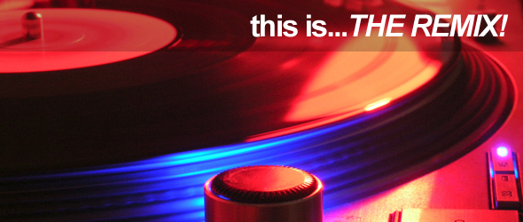

Flavor For Your Ears
Bringing you the best playlist ever created. You may enjoy our regional playlists, featuring music from specific cities, states, and/or countries. If those aren't your syle (that's your problem) we also have themed playlist. Check them all out, below.
Forever I Love Atlanta

The "A" has provided us with numerous classics and bangers. Peep the playlist for our favorites: ATL Shawty
Sample City
It's time to pay homage to the creators of some of our favorite instrumentals and showcase the best beat flips too: Sample City
